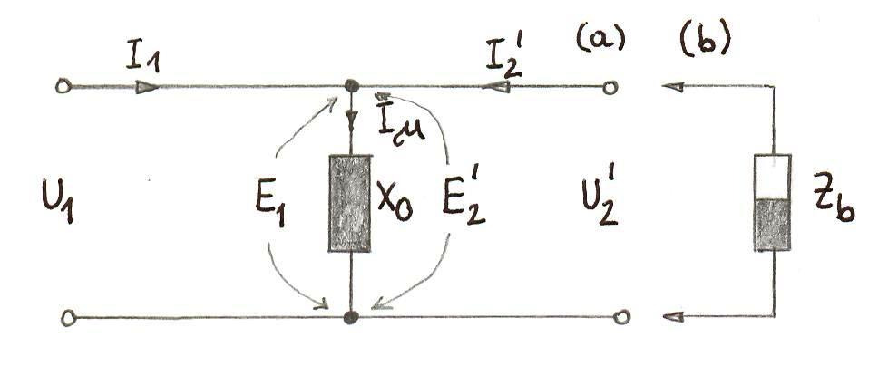
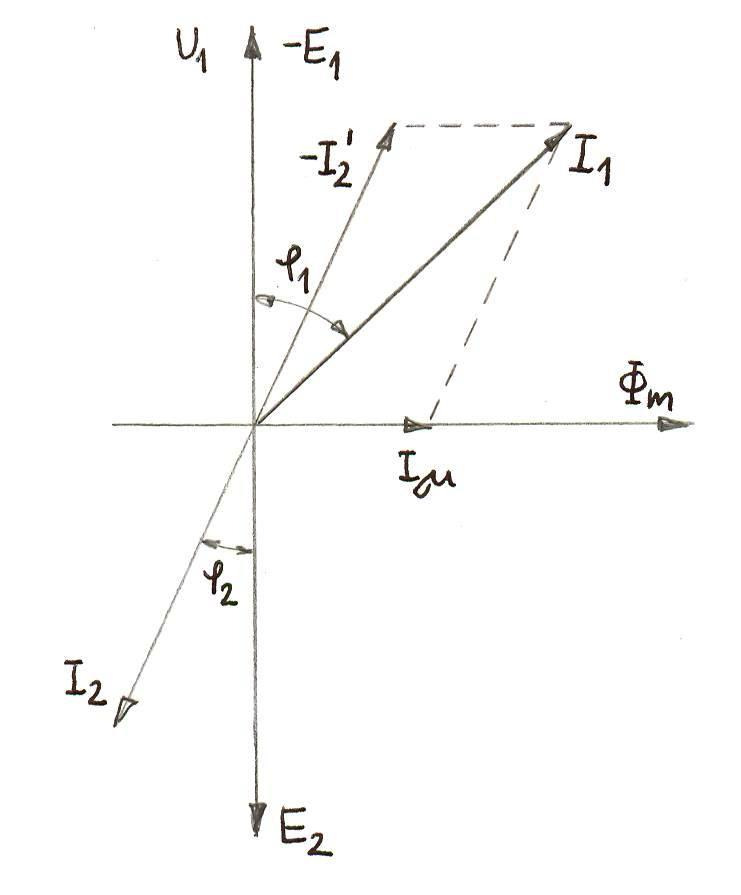
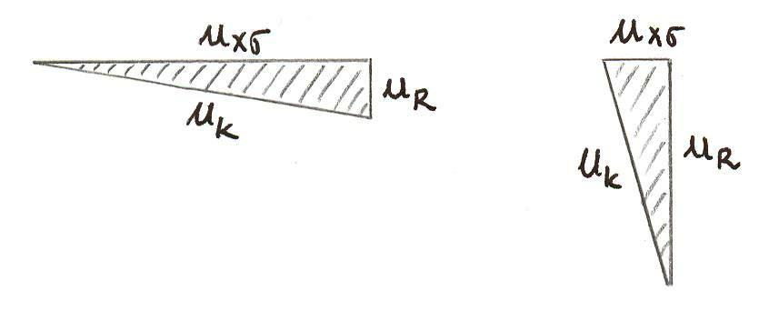
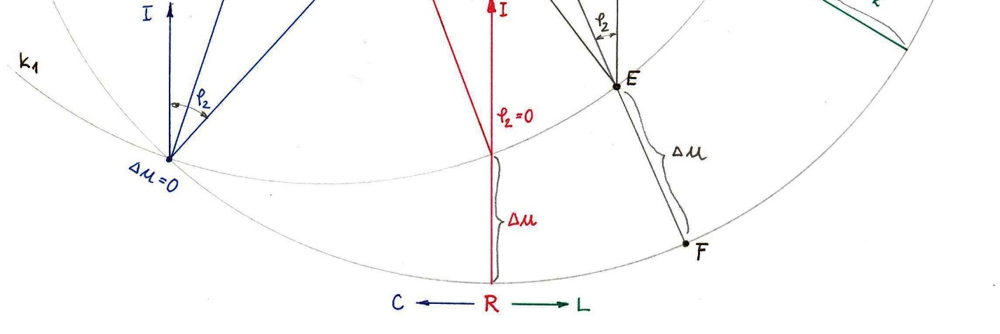

Teoretične osnove: Kazalčni diagrami
V prejšnji vaji smo izpeljali vse matematične nastavke za reševanje transformatorja v nazivnem bremenskem stanju. Ker so poteki napetosti in tokov pri izmeničnih sistemih pretežno sinusni, jih za lažjo analizo prestavimo v t.i. kompleksno ravnino, kjer vsak sinusni signal obravnavamo kot vrteč se vektor s konstantno krožno hitrostjo $\omega$. Vektor se v ravnini sicer vrti, a če obravnavamo samo medsebojna razmerja (kote med tokovi in napetostmi), si ga lahko v danem trenutku t=0 narišemo kot statičen kazalec.

Slika 1: Sinusni signal določen s svojo amplitudo $\hat{U}$, frekvenco $\omega$ in faznim kotom $\varphi$.
1. Kazalčni diagram idealnega transformatorja
Razvoj začnemo z idealnim transformatorjem. Njegove lastnosti so:
- Ni izgub v železu (jedro) $\rightarrow R_0 \rightarrow \infty$, kar pomeni da je $I_{0d} = 0$.
- Ni padcev napetosti in izgub v bakru (navitja) $\rightarrow R_1, R_2 = 0$.
- Idealen magnetni sklep (ni razsipanega polja izven jedra) $\rightarrow \mu \rightarrow \infty$, torej $X_{\sigma 1}, X_{\sigma 2} = 0$.
Prosti tek: Sekundarne sponke so odprte. Edini tok, ki teče v primar, je magnetilni tok $I_\mu$, ki postavi polje $\Phi_m$. Magnetni pretok nato inducira napetosti $E_1$ in $E_2$. Kot vemo iz Faradayovega zakona (odvajanje sinusa v kosinus), napetost fazno prehiteva magnetni pretok za 90° ($\pi/2$).

Slika 2: Idealni prosti tek. Inducirana protinapetost $E_1$ je nasprotna zunanjemu viru $U_1$.
2. Prehod na realni transformator in Kappov trikotnik
Idealnemu dodamo nazaj upornosti $R$ in razsipne induktivnosti $X_\sigma$. Posledično se pojavi padec napetosti na obeh navitjih, in sicer tako na primarnem $U_1 = -E_1 + I_1 \cdot Z_1$ kot na sekundarnem izhodu $U_2 = E_2 - I_2 \cdot Z_2$.
Vse sekundarne veličine najprej reduciramo na primar ($E_2', I_2', R_2', X_{\sigma 2}'$). Da poenostavimo izris, upoštevamo predpostavko nazivnih obremenitev, kjer je magnetilni tok $I_0$ zelo majhen ($I_1 \approx I_2'$). S tem lahko združimo upornosti primarja in sekundarja v enotno kratkostično impedanco $Z_k$.
Iz tega dobimo slavni Kappov trikotnik, ki grafično predstavlja sestavo padca napetosti na samem transformatorju ($\Delta u$). Kateti trikotnika sta ohmski padec napetosti $u_R$ (ki je v fazi s tokom) in induktivni padec napetosti $u_X$ (ki je premaknjen za 90° naprej od toka). Hipotenuza je skupni kratkostični padec $u_k$.

Slika 3: Nastanek Kappovega trikotnika in odvisnost napetosti obremenjenega transformatorja.
Prav ta trikotnik nam definira padec $\Delta u$, kar določa razliko v dolžini vektorjev med primarno $U_1$ in sekundarno (reducirano in obremenjeno) napetostjo $U_2'$.
Na zgornjih in nadaljnih skicah je Kappov trikotnik (padci $u_R, u_X$) izrisan izjemno veliko glede na celotno napetost $U_1$. V realnosti pri močnostnem transformatorju kratkostična napetost $u_k$ znaša le okrog 4%. Trikotnik bi bil komaj viden mikroskopski pikec na koncu kazalca $U_1$. Zato se kazalčni diagrami v literaturi vedno rišejo s hiperbolično napihnjenimi padci napetosti za razločnost.
3. Vpliv faznega kota bremena $\varphi_2$ na Kappov diagram
Če se dolžina vektorja toka in s tem velikost Kappovega trikotnika obdrži enaka (ohranimo recimo nazivno obremenitev toka $I=I_n$), a začnemo vrteti kot bremena (od ohmskega $\varphi=0$, do induktivnega motorja $\varphi>0$ ali kapacitivnega bremena $\varphi<0$), vidimo, kako se trikotnik začne vrteti okoli fiksnega kazalca $U_1$. To natančno orisujeta zunanji krožnici v Kappovem diagramu.
Interaktivni model padcev: $U_1 = U_2' + I \cdot Z_k$
Trenutni rezultati:
Stanje bremena: Ohmsko
Vektor napetosti $U_2'$ = 100 V
Padec napetosti $\Delta u = U_1 - U_2'$ = 0.0 V

Slika 4: Kappov diagram - sledenje konice napetosti $U_2'$ ob vrtenju bremena.
Vidimo, da se na "kapacitivni" strani konica napetosti dviguje proti središču ali ga celo prestopi! Padec napetosti na upornostih stroja lahko paradoksalno zviša napetost na njegovih izhodnih sponkah (gre za resonančni pojav)!
Preveri svoje znanje
1. Kviz: Maksimalni padec napetosti na transformatorju
Pod kakšnim pogojem (pri katerem faznem kotu $\varphi_2$) nastopi največji možni padec napetosti $\Delta u$ na izhodu transformatorja?
2. Kviz: Učinek močno kapacitivnega bremena
Kakšen je vpliv močno kapacitivnega bremena ($\varphi_2 < 0$) na izhodno napetost transformatorja po zgoraj izrisanem Kappovem diagramu?